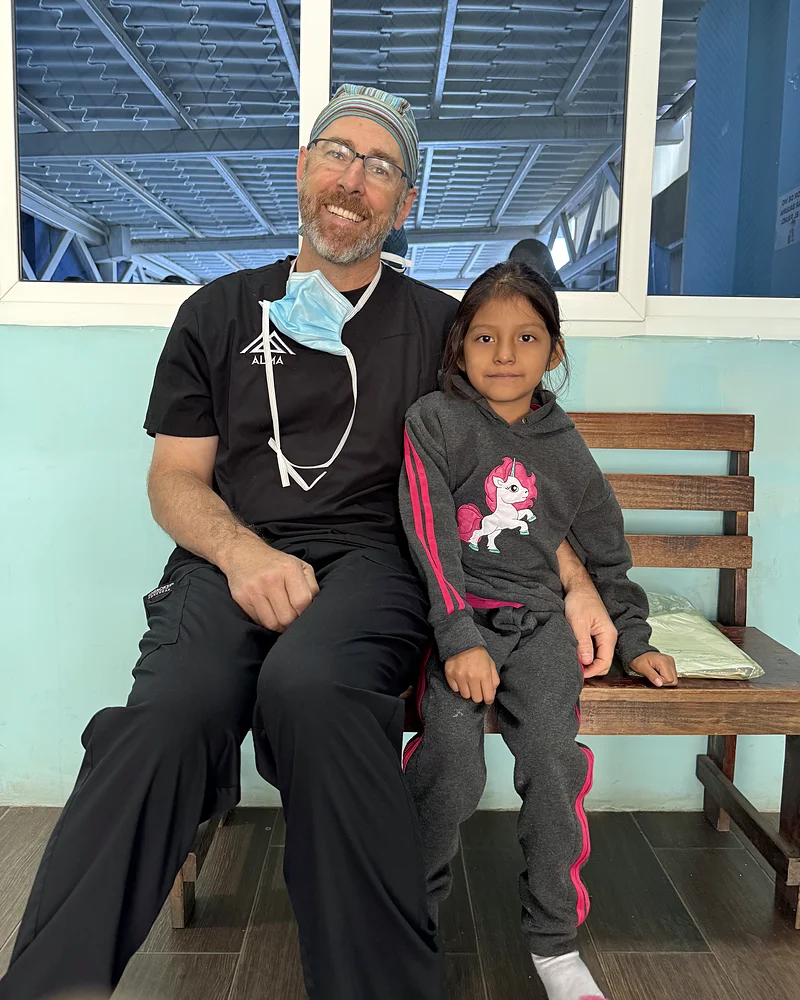

Apr162027
Open to volunteersENTGeneral Surgery
ENT and General Surgery
- Dates
- Apr 16 – Apr 24, 2027
- Hospital
- Centro Médico Renacer, Guatemala City13 Avenida C 2-64, Zona 2, Mixco, Guatemala City 01057 · +502 2209 4343
- Lead surgeons
- Dr. James Merrell, MD (ENT, USA) · Dr. Richa Khatri (General Surgery, USA) · Dr. Danilo Torselli (Endocrine Surgery, Guatemala) · Dr. Julio Estrada (General Surgery, Guatemala)
Day-by-day schedule
- Fri, Apr 16 · DepartureEvening Fly out to Guatemala on the team flight
- Sat, Apr 17 · Arrival dayArrive in Guatemala City
- Sun, Apr 18 · Antigua & OR setupMorning Yoga and stretchingMorning Quick tour of AntiguaNoon Lunch in AntiguaAfternoon Back to Guatemala City to set up the operating room
- Mon, Apr 19 · Operating room7:00 am Surgery starts at Centro Médico RenacerEvening Usually done between 5 and 6 pm
- Tue, Apr 20 · Operating room7:00 am Surgery starts at Centro Médico RenacerEvening Usually done between 5 and 6 pm
- Wed, Apr 21 · Operating room7:00 am Surgery starts at Centro Médico RenacerEvening Usually done between 5 and 6 pm
- Thu, Apr 22 · Acatenango volcanoMorning Hike up Acatenango, right across from the active Fuego volcanoA high-endurance climb to above 13,000 feet, with guides and SherpasNight Glamping on the volcano with Campify: cots and sleeping bags up topSee Campify →
- Fri, Apr 23 · Back down & spaNoon Back down around middayAfternoon Spa at Hotel Santo Domingo
- Sat, Apr 24 · Fly homeFly home
Operating room days run about 7 am to 5 or 6 pm.